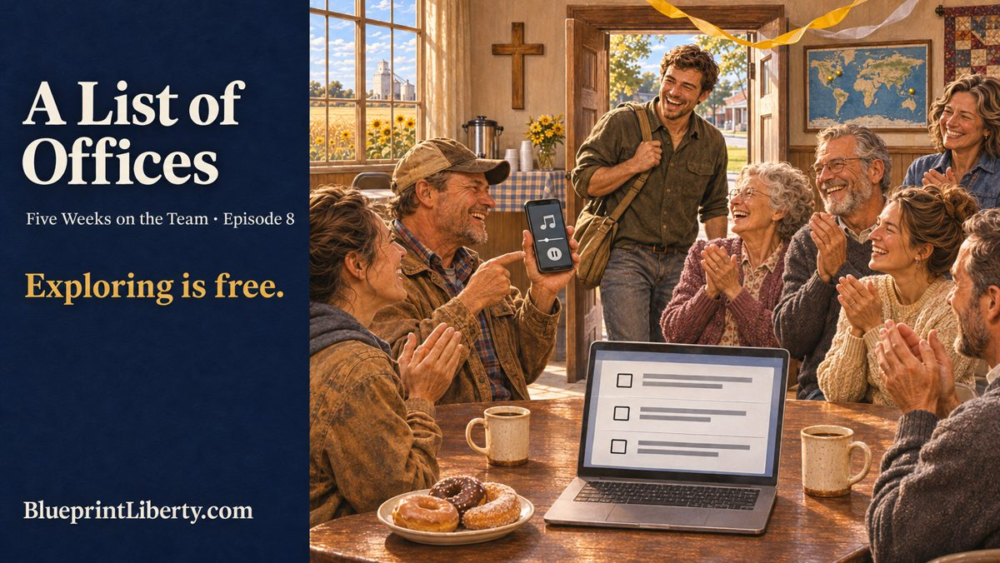

← Runtime Republic · Five Weeks on the Team
Five Weeks on the Team · Episode 8 of 10 · about 7 minutes · Draft under review

When Jake walked into the Sunday meeting, Dale was waiting with his phone held up. As soon as the door opened, he pressed play, and "Hail to the Chief" filled the fellowship hall. The whole team stood up and clapped in time, as seriously as they could manage, which wasn't very.
Jake stopped in the doorway and laughed until he had to lean on the coffee table. "So now you see me in a tab," he said, "right next to the sitting House member."
He wasn't wrong. The week after his announcement, the app had given him something he hadn't asked for: a new tab on his card, called Exploratory. Each office on the list had two columns. On the left was the person who holds that office now, with the term, the next election date, and every reply card that office had sent the team. On the right was Jake, with a column of open items and a blank record. Seeing his name in the same row as the sitting state representative for his district was the funniest thing Dale had seen all year, and that was the reason for the music.
When they sat down, Ruth explained what she had learned from the help page. An exploratory candidate in the app isn't running for one office. He's looking at several. That's the whole point. The tab doesn't ask "What are you running for?" It asks "Where could you do the most good, and where are you ready?" Then it lets you build a list of offices to compare side by side, with the person who holds each one right next to you.
At the top of Jake's list was one line: Kansas House, 2028. But when the team opened the tab together, the app asked him the question it asks about everything: What problem are you trying to fix?
Jake thought about it. "My traffic stop happened on a city street," he said. "With a city officer, under city policy, and paid for by city taxes. The state writes the traffic laws. But the city decides how its officers run a stop."
"Then why isn't the city on your list?" Ruth asked.
Jake didn't have an answer. So he added it: Wichita City Council, his district, 2027.
A new row appeared, with his council member on the left and Jake on the right. Dale reached for his phone again. Jake told him once was enough.
That new line changed the whole conversation, because 2027 is next year. Kansas holds its city elections in odd-numbered years, so a council seat could be on the ballot in less than a year, if his district's seat was one of those up in 2027. The app couldn't confirm that on its own. It marked the line in amber with a note: verify which council districts are on the 2027 ballot and the filing deadline, on the county election office's official site. Jake checked it that afternoon on his phone. His district's seat was up. He took a screenshot, and the app logged it with the date and the source. The amber turned blue.
Next, the app did something only a team that has traced its taxes for a year could do. It laid Jake's own tax trail over his list of offices.
Each office now showed which of Jake's real dollars it controlled. The Kansas House line lit up across state income tax withholding from his paychecks, the state share of sales tax on every receipt, and the state fuel tax inside every gallon. The city council line lit up across the city's share of the property tax inside his rent, the franchise fees on his electric and gas bills, and the fines and court costs a traffic ticket brings. The app showed each office's share of his yearly taxes as a calculation, labeled as one, with the source of every number.
Dale leaned over. "The state's number is bigger."
"It is," Jake said. "But look at the stop." He pointed at the city line. The cost of the night he was arrested wasn't a tax, but the team had traced it anyway: the lost shift, the lawyer, the tow fee, the hours. Almost every station of that night belonged to the city. "The state writes the rules. The city runs the play."
The app added the open questions to Jake's side of each row. How many signatures does the filing require, if any? What is the filing fee? When must he name a treasurer if anyone gives him money? The app didn't answer any of them from memory. Each one became an open item with the official site it should be checked against, and a blank for the date it was checked.
That's where Dale came in again, without the music this time. "If anybody ever gives you money," he said, "I'll keep the books. I already keep mine every Saturday."
The app took him seriously. It added Dale to the card as a proposed treasurer, marked "not yet." It also added a rule Jake wrote himself: no money would be accepted until the rules for that office were checked and the treasurer was named in writing. Exploring is free. The moment it costs someone else money, it's a campaign, and campaigns have rules.
Then Jake opened his reply-card folder and sorted the twenty-six cards by office. Each card slid into its row in the left column, under the person who had sent it. Four came from city hall. One was from his own council member, who had checked "I will review this" months ago and never followed up.
"I'm not going to run against him," Jake said. "Not yet, anyway. I'm going to write him another letter and ask if he'll meet with our team. If he does, and he joins the team, maybe I don't need to run for that seat. That's the best outcome. If he doesn't, I'll know something I didn't know before."
The app logged a second letter, with the reply card and the stamp.
By the end of the meeting, Jake's Exploratory tab had three rows. City Council, 2027: the closest office to the problem, with the date verified and filing details open. Kansas House, 2028: the bigger budget and the rules for every traffic stop in the state. And a third row, added after Brittany asked one quiet question: "What about the school board? That's most of your property tax." Jake shrugged and added it, marked "watching only."
The idea spread the way the church teams had. By the next Sunday, three other members across town had opened Exploratory tabs of their own. One was a retired teacher looking at the school board. One was a farmer's wife from a team outside the city, looking at the county commission. And one was Maria, who said she wasn't running for anything but wanted to see what her list would look like. Hers had five rows, each with a name on the left and her own on the right. She said it was the first time government made sense to her as a set of jobs instead of a set of names.
The app has one rule for every Exploratory tab: each office on the list has to connect to at least one line on your own tax trail. You can't explore an office whose money you can't follow. Jake liked that rule so much he had it printed on the back of his reply cards.
The last thing he did that night was the hardest. He answered his own stewardship letter, the one he had written to himself as if he already held office. He had to answer it twice, once as a city council member and once as a state representative. The answers weren't the same. The council answer was shorter and more specific, and he could have kept nearly every promise in it.
He looked at both answers for a long time. Then he moved City Council to the top of the list.
When Dale saw the change on the team dashboard later that night, he sent Jake a text. It was only one line: "Want me to queue up the music again for 2027?"
Jake wrote back: "Save it for the filing receipt."
← Episode 7 · Series index · Episode 9 →